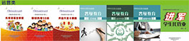
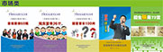
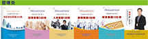
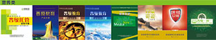
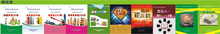
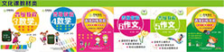
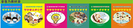

进入二十一世纪的中国教育培训业，诞生一个新兴的行业产品——品牌学生托管。众多学生托管机构中，北京晋级爱之家国际文化传播有限公司旗下的“晋级托管”，横空出世，一马当先，历时十二年，成为中国学生托管的开创品牌！
晋级托管针对“中国的城镇孩子放学后怎么办”这个大问题，围绕“中国城镇的有些父母管不了放学后的孩子怎么办”做文章，紧盯八大需求群体，提供放心服务。晋级，为蜗居在居民单元楼的孩子们提供游乐空间；晋级，为缺乏玩伴的独生子女提供玩伴；晋级，为作业繁重的孩子们缩短作业时间并提高作业质量；晋级，为产生“独生子女病”的孩子们纠正不良习惯和劣质性格；晋级，为深受应试教育熏陶的孩子们提升非智力素质。这就是“晋级托管”这个品牌的诞生理念，服务理念，经营理念！
从2004年办起第一所培训托管学校起，晋级经过近十二年的发展建设，完善了两个巨大工程——硬件建设工程和软件建设工程。
自建和租建晋级托管校区校舍，居住舒适，装修适度。教学设施成龙配套，紧跟潮流。招聘的托管老师，严格把关，优胜劣汰。编纂具有自主知识产权的全套《晋级托管教材》，分文化课类和非智力开发类，全套共50册，更是大耗物力，长耗人力。软件工程建设方面，晋级建起了完善的理论体系，基本解决了自身在生存和发展中“应该要怎么做”和“为什么要这么做”的问题；晋级建起了相对完善的企业管理制度体系，以《晋级教育校区校长岗位行为规范》为例，就多至230条，长达41000字！
晋级搭建了自己的配套信息平台。在互联网上，晋级建起了两大网站——《中国晋级教育网》、《中国学生托管网》，在无线广播电台长年开设有tt《快乐晋级——校园风景线》互动访谈节目，办有自己的报纸《晋级爱之家》和杂志《晋级之路》；晋级长年坚持举办“专家报告会”，向全国各地的数十万晋级学员家长和准家长宣传托管，展示晋级，坚持举办“家长沙龙”和“家长培训班”，免费让家长到会听课听讲，宣传教育技巧，密切家校关系。 晋级形成了高标准的“托管服务行为规范”。学生托管管什么？这是所有托管机构在把托管由低端做向高端必须回答和实践的根本性课题。晋级在全国同行业的品牌机构中，独特性地把托管服务开拓扩展至“六管”，即：管安全、管学习、管娱乐、管生活、管品行、管健康，由此形成了自己的品牌特色。晋级“六管”模式的建立和实施，宣告着学生托管进入品牌时代。面对“小饭桌”的不规范、不卫生、不标准和不内行，学生家长们注定只会选择品牌托管。
晋级在2007年即实现了省、地、县、乡镇校区的四级覆盖，2010年直营校区达到35家，2011年启动加盟后三个月加盟校区突破100家。如今，晋级教育在北京、西安、武汉、襄阳、黄石等城市共建立了38家直营校区，在除新疆、西藏、港澳台外的各省市自治区发展了加盟校600余家。今后，晋级将围绕美誉度工程、知名度工程、普及度工程，力争到2020年在所有的省市自治区建各省总部，在60%的地区级城市建总校，在全国20%的乡镇建校区，5年之内让晋级托管校区达到10000家！让晋级托管在全国范围内，造福于更多的儿童少年！
选择晋级托管，孩子进步家长心安；携手晋级托管，共同打造美好明天！
“播种一种行为，收获一种习惯；播种一种习惯，收获一种性格；播种一种性格，收获一种命运。”基于这种理论，全国晋级教育连锁机构历经三年，研发出了非智力因素培养之好习惯特训营体系，旨在在一个人最容易养成习惯的年龄段，通过一系列的训练，改掉让父母头疼、孩子受困的坏毛病，养成乐观开朗、积极向上、独立自强、团结协作、吃苦耐劳、作息规律、感恩知报、节约惜时、交流顺畅、举止得体、玩乐有度等好习惯。
目前，晋级教育已经开发出了六大非智力因素开发课程，依次为《培养生活好习惯》、《塑造做人好心态》、《掌握学习好方法》、《练就一手好书法》、《锻炼健壮好身体》、《提升国学好素养》，这些课程集故事性、趣味性、参与性、实用性为一体，通过循序渐进、学玩一体的方式，让学生会学、会玩、会思考、会生活，奠定一生幸福快乐健康成长的基石。
晋级好习惯特训营，立足当下，放眼未来，为中国孩子的健康成长带来了福音，为善良的中国父母分忧解难，为中国的未来塑造栋梁之才。
晋级快乐学习法包含六个子项目：野外大课堂、专家报告会、夏冬令营假日行、亲子运动会、快乐大课间、课堂小游戏。在开办中小学生课外培训机构的过程中，您是否面临过这样一些困局——
家长希望通过报班提分数，我们也做了大量努力，但考试成绩为何永远不能让家长满意？
连续几年的老学员却嚷着不学了，孩子的忠诚度为何难以建立？
房租涨、水电涨、工资涨、广告涨，学费却不敢轻易涨上去，利润空间为何被越压越低？
减轻学生课业负担的呼声，为何总使得社会对我们的存在价值质疑？
不远的将来，您是否希望这样一些转机——
孩子对课外报班充满兴趣，每每盼到节假日背着书包上学去！
家长对培训机构很满意，认为孩子在这里学到了公办学校没有学到的东西！
社会对我们很认可，认为我们是公办教育的有益补充！
在实现“孩子快乐、家长欢心、社会满意”等社会效益的同时，作为民办教育培训机构，我们的经济效益也能够得到保障和提升！
成功一定有方法！多年来，晋级教育通过举办野外大课堂、专家报告会、夏冬令营假日行、亲子运动会、快乐大课间等一系列“玩”的活动，让孩子玩出智慧、玩出乐趣，让家长玩出笑容、玩出惊喜，让校长玩出成就、玩出效益，玩出一片艳阳天！
其实，这并非一个新课题。培训机构的快乐学习“开山鼻祖”，名字就叫“兴趣班”。让孩子玩好，就是回归培训机构的本质和本职。
然而，这确实又是新思路。不用增加设施，不用转换师资，不用加盟项目，只需改变思路，掌握一定方法，就能充分实现培训机构的社会价值和经济价值。
1晋级中国行
产品介绍：晋级团队在全国各地传递晋级先进理念，传授晋级办学方法，传播晋级特色文化的课程，是广大民办教育机构实现升级的大好机会，是校长和老师降低成本、就近学习的绝佳平台，是接触晋级天使、吸收晋级正能量的必然选择。
2晋级大会
产品介绍：每月一次的校外教育行业晋级大会，传授人力、薪酬、团建、招生等一系列不同主题的技巧和方法，让广大民办教育机构实现升级。
3中国托管教育高峰论坛
产品介绍：讲解学生托管机构的招生、带班、续班等一系列托管升级的技巧和方法以及培训机构嫁接托管之道，同时现场观摩两千人专家报告会，感受家长排队报名的疯狂场面，学生托管行业必备的课程。
4窦昆老师教育营销三部曲
产品介绍：分为三个课程，即：畅销型课程设计实操班、营销型团队打造魔训营、招生使用技巧内训会，分别主讲“产什么”和“卖什么”、“为啥卖”和“谁来卖”、“卖给谁”和“怎么卖”这三个层次六个方面的问题，转变老板和老师们的思想，让他们从教师自然人过渡到教育营销人，最后成为教育实业家。
5晋级教育校长高级研修班（四天三夜）
本课程涵盖了做好品牌托管的一系列的内容，从校区选址、校区结构设计、校区装修风格路线，到人员招聘、员工培训、团队打造、员工思想、业务培训、员工薪酬设计、企业文化建设等方面进行深入浅出的讲解。
6晋级托管六管落地营（三天两夜）
晋级在全国同行业的品牌机构中，独特性地把托管服务开拓扩展至“六管”，由此形成了自己的品牌特色。之所以能够超越于所有全国的品牌托管服务，就在于“六管”是一种“天下老师管孩子达不到”和“天下父母管孩子超不过”的全内容托管。六管落地营正是讲解六管的具体实施内容和办法。
7晋级托管精英教师特训营（四天三夜）
涵盖思想、招生、带班、续班等托管教师所要具备的全部理论知识，并穿插进行相关实践活动。培训结束之际进行笔试、面试，合格者颁发《晋级托管教师资格证》。结束之前安排参训人员通过摄像机镜头向校长宣誓，保证至少为本机构效力三年。
8晋级全员化招生员工实操班（两天一夜）
晋级全员化招生校长实操班（三天两夜）解决校外教育机构三大致命性问题：认为培训机构的主要工作是抓教学而不是抓招生；不知道抓全员化招生的至关重要性；不知道该如何去抓全员化招生。
9晋级团队建设实操班（三天两夜）
涵盖学校团队建设六大模块，包括员工招聘、员工培训、 员工管理 、员工教育 、员工付酬 、员工晋升等一系列实用技巧，窦昆老师全程授课，直击当今中国校外教育界团队建设四大共性难题：招不来、用不成、管不了、留不住。
10晋级薪酬设计实操班（三天两夜）
详细讲解零底薪绩效方案、对赌机制、PK法则、参股方案、购买客户办法等独具晋级特色的晋级薪酬体系，并现场为参训学员设计一套符合学校实际情况的薪酬方案。
11晋级家校沟通实操班（三天两夜）
讲解校外教育机构常规沟通、网络沟通、招生沟通、续班沟通、突发事件沟通等6大类50种沟通方法，穿插介绍沟通经典案例和话术。
12晋级员工会议实操班（三天两夜）
老板意图怎么贯彻，员工思想怎么凝聚，重大活动怎么落实，遇到困难怎么解决，三天两夜时间，组织管理类会议，思想教育类会议，工作推动类会议，问题处理类会议，凝聚团队类会议，集纳群智类会议六大模块，共五十二类会议，教您驭人本领。
13晋级校长正能量激励营（两天一夜）
课程涵盖校长应该具备的十大正能量：信念能量、执行能量、负责能量、拼搏能量、钻研能量、爱心能量、快乐能量、热情能量、凝聚能量、敬业能量，让校长远离抱怨、遗憾、愧疚三大负能量。
14晋级学习型假日实操班（一天）
一年即将结束，您是否担心员工陆续递离职？您是否担心员工被负能量干扰？您是否担心年终奖一去不复返？放假了，员工春节应该怎么过？春节员工离职潮，老板怎么破？如何调动员工学习激情？如何屏蔽负能量？奖金应该如何发？晋级学习型假日实操班帮你一一攻破。
15晋级野外大课堂实操班（三天两夜）
详细讲解野外大课堂，挑选内容主题、方案流程设计、招生任务制定、宣传方案规划、操作步骤解析以及安全注意事项。不用增加设施，不用增加师资，它是扩大校区影响力，增加校区利润的致胜法宝。
16晋级专家报告会实操班（两天一夜）
如何招商、如何制作和卖门票、整场活动的流程如何制定、如何达到排队报名续费新招等全部流程，保证每位参会学员回去之后都能够在当地开办晋级专家报告会。
17晋级人力资源管理实操班（四天三夜）
解决新员工招聘、培训、考核、试用、薪酬设计问题，内容涵盖人力资源部组建、绩效考核、岗位数量、职责、考核办法等校外教育机构人力资源管理的全面系统的实操技巧。
18晋级家长沙龙实操班（两天一夜）
讲透邀约家长，制定主题，设置流程，鼓励家长参与互动等各种细节，课程以观摩、听讲、实战演练的方式授课，学习了解晋级教育开办家长沙龙的相关理论和实操方法。
19晋级校区校长特训营（三天两夜）
为员工搭建成长的平台，培养老师的统筹管理能力，让老师学会当校长，学会做员工的思想工作，学会带领团队进行招生、续班、教学、开展活动，让执行校长的管理水平、业务能力取得飞跃性提升。
20晋级校区扩张战略战术实操班（两天一夜）
多开校区能给员工更大的平台，打造团队，提升影响力，降低整体运营成本。从校区选址，装修，准备物资，招聘，宣传，开业，招生，试营业，调节，督查，入轨，平台，品牌效应等方面一一详解。
21晋级全员化舞蹈实操班（两天一夜）
如何展示企业文化，提升企业正能量；怎样让员工打开、放下；怎样让员工快乐晋级，感到工作辛苦而不痛苦。解决员工不愿放下面子，不愿放下思想包袱，引导员工去做有意义的事。
员工要是思想打不开、格局打不开、思维打不开，做事就会按部就班没创意。全员化跳舞才能解决！







北京市海淀区蓝靛厂路25号汇博大厦4楼
4000-400-826
晋级教育官微
窦昆老师微信